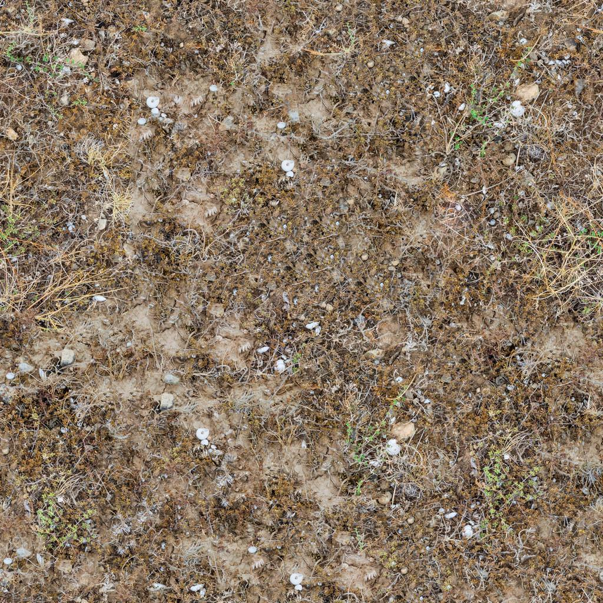

Tipos de solo
Os solos das Pradarias, localizadas principalmente no Rio Grande do Sul, apresentam características variadas. Algumas áreas possuem solos escuros e férteis, enquanto outras têm solos arenosos ou pouco profundos.
Essas diferenças influenciam o crescimento das plantas e as possibilidades de uso agrícola de cada região.

Nutrientes do solo
A matéria orgânica, formada pela decomposição de restos de seres vivos, ajuda a manter a fertilidade do solo e a reter água e nutrientes.
O nitrogênio favorece o crescimento das folhas, o fósforo contribui para o desenvolvimento das raízes e o potássio participa da regulação da água nas plantas.

Degradação e preservação
O uso inadequado do solo pode provocar erosão e perda de nutrientes. Em algumas áreas do sudoeste gaúcho também ocorre a arenização, com a exposição de solos arenosos e dificuldade para o crescimento da vegetação.
Preservar a vegetação natural e utilizar o solo de maneira adequada ajuda a reduzir a degradação e proteger o equilíbrio ambiental das Pradarias.